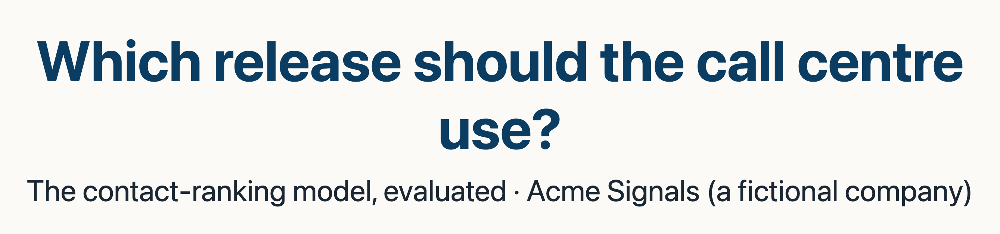

- Which release should the call centre use?
- v3 reaches 43.6% of subscribers by calling a tenth of the list
- v3 beats v2 on all 5 metrics, with the same 1,131 calls
- v3 ranks the whole list best: ROC AUC 0.799, against 0.654 for v1
- v3 calls 47.9% of contacts aged 60+ but 5.0% of those aged 40-49
- v3’s predicted probabilities are within 1.7 points of the observed rates
- These results do not yet show how v3 will do for a client
- We decide: offer v3, after a legal review of its use of age
11 Diapositivas que sostienen una decisión
Palabras clave
Quarto, publicación reproducible, agentes de programación, Markdown, Python, EPUB, análisis de datos, k-means
El informe y la ficha del modelo son para personas que leen. La decisión sobre qué versión va a usar el centro de llamadas de Acme se toma en otro lugar: en una reunión, frente a una pantalla, entre personas que van a mirar cada diapositiva unos segundos y van a recordar quizá tres. Más vale que una de esas tres sea la diapositiva que dice qué se decide, y con qué condición. Una presentación para esa sala es otro documento: no un informe cortado en pedazos, sino un argumento breve, una afirmación a la vez, que termina en la decisión.
Este capítulo construye esa presentación para el equipo de producto de Acme y sus inversionistas: una página web que se presenta sola, un PDF para enviar después y un archivo de PowerPoint con la plantilla de la empresa, todo desde una sola fuente que lee los mismos resultados que el informe.
En este capítulo
- Nombrar lo que hace funcionar una presentación técnica, y las funciones de Reveal.js que la sirven: notas de presentación, fragmentos, columnas, temas y vista de impresión.
- Pedir una presentación cuyos títulos enuncien afirmaciones calculadas a partir de los resultados, protegidas por guardas, con el detalle en las notas.
- Comprobar con una prueba que los colores de un tema cumplen el mínimo de contraste de WCAG para texto normal.
- Exportar la presentación a PDF y a PowerPoint con una plantilla de la casa, y saber qué pierde cada formato.
Lo que vas a construir

checkpoints/16-eval-slides/slides.qmd.
Lee solo sus títulos y tienes su argumento, en inglés como todo el proyecto de Acme: la pregunta, el titular, la comparación, el ordenamiento, a quién se llama, cuánto confiar en las probabilidades, lo que los resultados aún no muestran y la decisión.
11.1 Qué hace que una presentación técnica funcione
Una presentación tiene éxito cuando la sala sale sabiendo la afirmación, la evidencia que la respalda y lo que se decidió. Cinco hábitos llevan hasta ahí, y cada uno es algo que puedes pedirle a un agente y revisar:
| Hábito | Revisas |
|---|---|
| Una afirmación por diapositiva | ninguna pide dos oraciones para decir qué muestra |
| El título es la afirmación, no “Results” | los títulos solos, en orden, son el argumento |
| Números calculados, palabras protegidas | cuadran con outputs/; una guarda frena un título falso |
| El detalle, en las notas | todas tienen notas; ninguna es un párrafo |
| Terminar en la decisión | la sala sabe qué estás pidiendo |
El segundo hábito es el que más trabajo hace: por eso los títulos del comienzo de este capítulo construyen el argumento por sí solos, del titular a la decisión.
11.2 Qué puede hacer una presentación, y cómo se llama
Quarto hace presentaciones en dos formatos desde una sola fuente: Reveal.js, una página web que se presenta sola en cualquier navegador, y PowerPoint. Cada título ## empieza una diapositiva en los dos. El resto es vocabulario: funciones que pides por su nombre, en la pantalla y fuera de ella.
| Pide | Quarto lo llama |
|---|---|
| notas de presentación | un bloque ::: {.notes} |
| puntos que aparecen uno a la vez | fragmentos: . . . entre párrafos, o ::: {.fragment} |
| dos columnas | :::: {.columns} con bloques ::: {.column width="50%"} |
| más texto, más pequeño | la clase {.smaller} en el título |
| la vista del presentador | presiona S al presentar |
| Pide | Quarto lo llama |
|---|---|
| un tema | theme: [default, acme.scss]: un tema incluido más tu archivo Sass |
| un pie de página y números de diapositiva | footer: y slide-number: true |
| un enlace estable a una diapositiva | un ID en el título: ## … {#decision} |
| un PDF | la vista de impresión: presiona E y luego imprime |
| una plantilla de PowerPoint de la casa | reference-doc: con un .pptx |
11.3 La presentación
El prompt reúne los cinco hábitos y el vocabulario, más tres frases que esquivan trampas encontradas al probarlo (Tabla 11.4). Pide una sola presentación, como una sola tarea, porque sus comprobaciones se ejecutan sin ti: las guardas, el renderizado y los títulos que enumera.
Pídele a tu agente
Crea slides.qmd, presentación Reveal.js en inglés a 1280×720 para el equipo de producto e inversionistas, solo desde outputs/: título y subtítulo YAML simples (sin código en línea); siete diapositivas, una afirmación cada una, dicha en su título, con los números como código en línea; notas en cada una de las siete; curvas ROC y a quién se llama por franja de edad como figuras matplotlib con texto alternativo, sin etiquetas `fig-`; una de dos columnas que compare v2 y v3; advertencias reveladas una a la vez. Pon una guarda en cada título cuya redacción dependa de los resultados. Renderiza y enumera los títulos.
Probablemente ejecute
escribe slides.qmd · uv run quarto render slides.qmd → slides.html
Tú haces
abre slides.html · presiona S para la vista del presentador, y E para la vista de impresión
Detente y piensa
El agente dice que la presentación se renderizó, y enumera sus títulos. Dos de ellos dicen “v3 reaches 42.0% of subscribers by calling a tenth of the list” y “v3 beats v2 on all 5 metrics, with the same 1,131 calls”. ¿Qué hábitos puede demostrar por sí sola una lista de títulos, y alguno de los dos está mal?
Respuesta
La lista prueba que cada título enuncia una afirmación y que la presentación termina en una decisión. Para revisar las notas hay que ver las diapositivas; para los números y las guardas, la fuente. El primer título está mal: 42.0% es el recall de v2, la proporción de quienes se suscriben que alcanza su décima parte superior, no el de v3. Con el número escrito a mano, ninguna guarda lo detendría: por eso los números de un título son código en línea. Un título calculado también puede leerse mal: una ejecución imprimió np.int64(6), un conteo sacado tal cual de pandas. Lee cada título renderizado.
Lee primero los títulos, en el orden en que los enumera el agente: deberían ser el argumento. Luego la fuente: los números de cada título son código en línea, cada afirmación de un título tiene una guarda, una comprobación en la celda anterior que detiene el renderizado en cuanto la afirmación es falsa, y cada diapositiva tiene un bloque de notas. Preséntala: presiona S, y la vista del presentador se abre en una segunda ventana con las notas, que es lo que vas a ver mientras la sala ve la diapositiva.
De la bitácora del proyecto
Mientras se construía esta presentación, las notas de la diapositiva de título se escribieron antes del primer título ##. Se convirtieron en una diapositiva propia: una extra, en blanco. Por eso el prompt pide notas “en cada una de las siete”, y por eso la presentación terminada le agrega las notas al título con un filtro corto, filters/title-notes.lua. Cuenta las diapositivas de lo que vuelve: debería haber ocho.
| El prompt dice | Porque |
|---|---|
| “título y subtítulo YAML simples” | el código en línea en title se ejecuta antes que cualquier celda (NameError); sin título, el primer título se promueve, sin calcular |
“sin etiquetas fig-” |
una etiqueta fig- agrega “Figure 1:” al pie |
| “notas en cada una de las siete” | las notas antes del primer ## se vuelven una diapositiva (el recuadro de arriba) |
AdvertenciaError frecuente
Mira cada diapositiva al tamaño de la presentación. En una ejecución de prueba, un ajuste fig-dpi les dio a las figuras un tamaño fijo que se salía de la diapositiva; en otra, sin ese ajuste, ocupaban menos de la mitad. El tema de la presentación terminada les da a las figuras una altura fija.
11.4 Un tema que se puede leer
Un tema es donde viven los colores y las fuentes de una presentación, y es donde la mayoría de las presentaciones le fallan a su público: un texto gris pálido sobre blanco es ilegible en un proyector. Las Pautas de Accesibilidad para el Contenido Web (WCAG) fijan el mínimo: una relación de contraste de 4.5 a 1 entre el texto normal y su fondo, y de 3 a 1 para el texto grande (WCAG 2.2, criterio de conformidad 1.4.3). La prueba del libro le exige a cada color la cifra más estricta, porque el texto más pequeño de una diapositiva es texto normal. Una prueba puede comprobarlo, así que pide la prueba junto con el tema:
Pídele a tu agente
Agrega acme.scss, un tema de Reveal.js sobre `default`: tinta oscura sobre un fondo blanco hueso cálido, un azul marino para los títulos y los enlaces, fuentes del sistema. Agrega tests/test_deck_contrast.py, que compruebe que el texto del cuerpo y los enlaces tengan una relación de contraste de al menos 4.5:1 sobre el fondo (WCAG 2.2), ejecuta la prueba y renderiza la presentación.
Probablemente ejecute
escribe acme.scss y la prueba · uv run pytest · renderiza la presentación
Los colores del tema terminado, medidos con la fórmula de las pautas:
#fbfaf7, calculados con la fórmula de WCAG 2.2, a partir de las variables que comprueba su prueba.
| Texto | Color | Contraste sobre el fondo |
|---|---|---|
| cuerpo | #1b2733 |
14.5:1 |
| títulos | #0b3d63 |
10.8:1 |
| enlaces | #0b5cad |
6.4:1 |
| pies de figura, pie de página | #4a5663 |
7.2:1 |
La prueba vuelve permanente la regla: un cambio de color posterior que no la cumpla hace fallar el conjunto de pruebas, antes de que alguien tenga que forzar la vista frente a un proyector. Hay algo a lo que un tema no llega: matplotlib dibuja sus figuras sobre blanco, que se ve como un recuadro blanco sobre una diapositiva blanco hueso. La presentación terminada las dibuja sobre un fondo transparente. El color no es lo único que hace legible una presentación, así que mantén también los otros hábitos: etiquetas de figura legibles desde el fondo de la sala, colores que se diferencien en luminosidad además de en tono, y texto alternativo en cada figura.
11.5 Un PDF para enviar después
Después de la reunión, alguien va a pedir las diapositivas. Quarto 1.10.20 no tiene un formato PDF para presentaciones de Reveal.js; el camino es la vista de impresión de Reveal.js, impresa por un navegador. A mano: abre la presentación, presiona E e imprime a PDF. Para que sea parte del build, un script puede hacer lo mismo en el Chrome que ya tienes, y revisar su propio resultado:
Pídele a tu agente
Escribe scripts/deck_pdf.py: que abra slides.html en `?print-pdf` en el Chrome instalado con Playwright (una dependencia de desarrollo), espere hasta que la página tenga un `.pdf-page` por diapositiva, la imprima a slides.pdf, compruebe que el PDF tenga una página por diapositiva y lo reintente hasta tres veces si no es así. Ejecútalo y dime la cantidad de páginas.
Probablemente ejecute
uv add --dev playwright · escribe scripts/deck_pdf.py · uv run python scripts/deck_pdf.py → slides.pdf
De la bitácora del proyecto
La primera versión de este script imprimía desde la línea de comandos de Chrome, la manera obvia. Escribía la presentación como un PDF de una sola página en blanco: Chrome había impreso antes de que la presentación se acomodara. La comprobación del script, una página por diapositiva, detectó cada impresión en blanco.
Así que el script espera lo que necesita. Reveal.js construye su vista de impresión un momento después de que carga la página, una página por diapositiva; Playwright, una biblioteca que maneja un navegador desde Python, abre la presentación en tu Chrome, espera a que existan esas páginas y solo entonces imprime. En la prueba para este libro, el 2026-11-24 con Chrome 158.0.8127.37, la línea de comandos imprimió una página en blanco cada vez, con o sin la opción de Chrome para terminar primero de dibujar; el script imprimió todas las diapositivas cada vez. Mantén la comprobación de todos modos, porque el próximo navegador puede volver a cambiar: una cantidad de páginas que debe ser igual a la de diapositivas detecta una impresión en blanco, y una diapositiva demasiado alta para su página, que Reveal.js imprime en dos.
11.6 PowerPoint, con la plantilla de la casa
Muchas organizaciones hacen circular sus presentaciones como PowerPoint, en una plantilla con sus colores, sus fuentes y su logo. Quarto renderiza PowerPoint desde la misma fuente, y un documento de referencia lleva la plantilla: un archivo .pptx cuyo tema y diseños de diapositiva copia Quarto. Toma como base el de Quarto, para que sus diseños tengan los nombres que Quarto espera:
Pídele a tu agente
Agrega una versión en PowerPoint: crea templates/acme-reference.pptx a partir del predeterminado de Quarto (`quarto pandoc -o templates/acme-reference.pptx --print-default-data-file reference.pptx`) con un script que fije los colores y la fuente de su tema a los de la presentación, agrega pptx a slides.qmd con `reference-doc`, renderiza y comprueba la cantidad de diapositivas y los colores del tema en el archivo.
Probablemente ejecute
quarto pandoc -o templates/acme-reference.pptx … · escribe un script que edita el tema de la plantilla · renderiza slides.pptx · cuenta las diapositivas, lee el tema
La plantilla de tu propia organización funciona como documento de referencia si sus diseños llevan los nombres que usa Quarto: Title Slide, Title and Content, Section Header, Two Content, Comparison, Content with Caption y Blank; si no, cámbiales el nombre en el patrón de diapositivas. Una plantilla es un archivo binario, así que haz commit también del script que la crea: el script se puede revisar en un diff, y el archivo no.
Ten en cuenta lo que PowerPoint conserva y lo que pierde. Las notas de presentación van a su panel de notas, y las dos columnas, a su diseño Two Content. Las reglas Sass del tema no se aplican, los fragmentos se vuelven listas estáticas, .smaller y el pie de página no hacen nada, y Quarto 1.10.20 escribe el nombre de archivo de la imagen donde debería ir el texto alternativo de la figura; el proyecto terminado lo vuelve a agregar con un script corto después del renderizado. Abre el archivo de PowerPoint y revisa cada diapositiva, como lo hará quien lo reciba.
¿Dos minutos sin avanzar? Pega esto en tu agente, que respalda tu trabajo y lleva el proyecto hasta este punto; luego sigue leyendo desde aquí.
Catch me up: follow ../quarto-workshop/checkpoints/16-eval-slides/README.mdResumen
- Una presentación técnica es un argumento breve: una afirmación por diapositiva, con un título que la enuncia, el detalle en las notas y la decisión en la última diapositiva.
- Pide las funciones por su nombre: notas de presentación, fragmentos, columnas, un tema, vista de impresión, un documento de referencia.
- Los números de un título se calculan y sus palabras se protegen con guardas, como cualquier oración de un informe.
- Revisa los colores con una prueba de contraste que los compare con el mínimo de WCAG de 4.5:1 para texto normal, para que una presentación legible siga siéndolo.
- El PDF sale de la vista de impresión, revisado página por página; el PowerPoint sale de un documento de referencia, y pierde el tema, los fragmentos y el texto alternativo, así que ábrelo antes de enviarlo.
La presentación expone el caso una vez, en una sala. Los resultados también necesitan un lugar donde cualquiera pueda encontrarlos, con los colores de la empresa y con cada documento enlazado: un sitio.
Lecturas adicionales
- Quarto, Reveal.js, cómo presentar y temas (consultados el 2026-11-18).
- Quarto, PowerPoint, sobre documentos de referencia y diseños (consultado el 2026-11-18).
- W3C, WCAG 2.2, criterio de conformidad 1.4.3, Contraste (mínimo) (consultado el 2026-11-18).